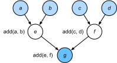

Compilers and Interpreters⚓︎
:label:sec_hybridize
So far, this book has focused on imperative programming, which makes use of statements such as print, +, and if to change a program's state. Consider the following example of a simple imperative program.
#@tab all
def add(a, b):
return a + b
def fancy_func(a, b, c, d):
e = add(a, b)
f = add(c, d)
g = add(e, f)
return g
print(fancy_func(1, 2, 3, 4))
Python is an interpreted language. When evaluating the above fancy_func function it performs the operations making up the function's body in sequence. That is, it will evaluate e = add(a, b) and store the results as variable e, thereby changing the program's state. The next two statements f = add(c, d) and g = add(e, f) will be executed similarly, performing additions and storing the results as variables. :numref:fig_compute_graph illustrates the flow of data.

:label:fig_compute_graph
Although imperative programming is convenient, it may be inefficient. On the one hand, even if the add function is repeatedly called throughout fancy_func, Python will execute the three function calls individually. If these are executed, say, on a GPU (or even on multiple GPUs), the overhead arising from the Python interpreter can become overwhelming. Moreover, it will need to save the variable values of e and f until all the statements in fancy_func have been executed. This is because we do not know whether the variables e and f will be used by other parts of the program after the statements e = add(a, b) and f = add(c, d) are executed.
Symbolic Programming⚓︎
Consider the alternative, symbolic programming, where computation is usually performed only once the process has been fully defined. This strategy is used by multiple deep learning frameworks, including Theano and TensorFlow (the latter has acquired imperative extensions). It usually involves the following steps:
- Define the operations to be executed.
- Compile the operations into an executable program.
- Provide the required inputs and call the compiled program for execution.
This allows for a significant amount of optimization. First, we can skip the Python interpreter in many cases, thus removing a performance bottleneck that can become significant on multiple fast GPUs paired with a single Python thread on a CPU.
Second, a compiler might optimize and rewrite the above code into print((1 + 2) + (3 + 4)) or even print(10). This is possible since a compiler gets to see the full code before turning it into machine instructions. For instance, it can release memory (or never allocate it) whenever a variable is no longer needed. Or it can transform the code entirely into an equivalent piece.
To get a better idea, consider the following simulation of imperative programming (it is Python after all) below.
#@tab all
def add_():
return '''
def add(a, b):
return a + b
'''
def fancy_func_():
return '''
def fancy_func(a, b, c, d):
e = add(a, b)
f = add(c, d)
g = add(e, f)
return g
'''
def evoke_():
return add_() + fancy_func_() + 'print(fancy_func(1, 2, 3, 4))'
prog = evoke_()
print(prog)
y = compile(prog, '', 'exec')
exec(y)
The differences between imperative (interpreted) programming and symbolic programming are as follows:
- Imperative programming is easier. When imperative programming is used in Python, the majority of the code is straightforward and easy to write. It is also easier to debug imperative programming code. This is because it is easier to obtain and print all relevant intermediate variable values, or use Python's built-in debugging tools.
- Symbolic programming is more efficient and easier to port. Symbolic programming makes it easier to optimize the code during compilation, while also having the ability to port the program into a format independent of Python. This allows the program to be run in a non-Python environment, thus avoiding any potential performance issues related to the Python interpreter.
Hybrid Programming⚓︎
Historically most deep learning frameworks choose between an imperative or a symbolic approach. For example, Theano, TensorFlow (inspired by the former), Keras, and CNTK formulate models symbolically. Conversely, Chainer and PyTorch take an imperative approach. An imperative mode was added to TensorFlow 2.0 and Keras in later revisions.
:begin_tab:mxnet
When designing Gluon, developers considered whether it would be possible to combine the benefits of both programming paradigms. This led to a hybrid model that lets users develop and debug with pure imperative programming, while having the ability to convert most programs into symbolic programs to be run when product-level computing performance and deployment are required.
In practice this means that we build models using the HybridBlock or HybridSequential class. By default, either of them is executed in the same way the Block or Sequential class is executed in imperative programming.
The HybridSequential class is a subclass of HybridBlock (just like Sequential subclasses Block). When the hybridize function is called, Gluon compiles the model into the form used in symbolic programming. This allows one to optimize the computation-intensive components without sacrifices in the way a model is implemented. We will illustrate the benefits below, focusing on sequential models and blocks.
:end_tab:
:begin_tab:pytorch
As mentioned above, PyTorch is based on imperative programming and uses dynamic computation graphs. In an effort to leverage the portability and efficiency of symbolic programming, developers considered whether it would be possible to combine the benefits of both programming paradigms. This led to a torchscript that lets users develop and debug using pure imperative programming, while having the ability to convert most programs into symbolic programs to be run when product-level computing performance and deployment are required.
:end_tab:
:begin_tab:tensorflow
The imperative programming paradigm is now the default in Tensorflow 2, a welcoming change for those new to the language. However, the same symbolic programming techniques and subsequent computational graphs still exist in TensorFlow, and can be accessed by the easy-to-use tf.function decorator. This brought the imperative programming paradigm to TensorFlow, allowed users to define more intuitive functions, then wrap them and compile them into computational graphs automatically using a feature the TensorFlow team refers to as autograph.
:end_tab:
Hybridizing the Sequential Class⚓︎
The easiest way to get a feel for how hybridization works is to consider deep networks with multiple layers. Conventionally the Python interpreter will need to execute the code for all layers to generate an instruction that can then be forwarded to a CPU or a GPU. For a single (fast) computing device this does not cause any major issues. On the other hand, if we use an advanced 8-GPU server such as an AWS P3dn.24xlarge instance Python will struggle to keep all GPUs busy. The single-threaded Python interpreter becomes the bottleneck here. Let's see how we can address this for significant parts of the code by replacing Sequential with HybridSequential. We begin by defining a simple MLP.
#@tab mxnet
from d2l import mxnet as d2l
from mxnet import np, npx
from mxnet.gluon import nn
npx.set_np()
# Factory for networks
def get_net():
net = nn.HybridSequential()
net.add(nn.Dense(256, activation='relu'),
nn.Dense(128, activation='relu'),
nn.Dense(2))
net.initialize()
return net
x = np.random.normal(size=(1, 512))
net = get_net()
net(x)
#@tab pytorch
from d2l import torch as d2l
import torch
from torch import nn
# Factory for networks
def get_net():
net = nn.Sequential(nn.Linear(512, 256),
nn.ReLU(),
nn.Linear(256, 128),
nn.ReLU(),
nn.Linear(128, 2))
return net
x = torch.randn(size=(1, 512))
net = get_net()
net(x)
#@tab tensorflow
from d2l import tensorflow as d2l
import tensorflow as tf
from tensorflow.keras.layers import Dense
# Factory for networks
def get_net():
net = tf.keras.Sequential()
net.add(Dense(256, input_shape = (512,), activation = "relu"))
net.add(Dense(128, activation = "relu"))
net.add(Dense(2, activation = "linear"))
return net
x = tf.random.normal([1,512])
net = get_net()
net(x)
:begin_tab:mxnet
By calling the hybridize function, we are able to compile and optimize the computation in the MLP. The model's computation result remains unchanged.
:end_tab:
:begin_tab:pytorch
By converting the model using torch.jit.script function, we are able to compile and optimize the computation in the MLP. The model's computation result remains unchanged.
:end_tab:
:begin_tab:tensorflow
Formerly, all functions built in TensorFlow were built as a computational graph, and therefore JIT compiled by default. However, with the release of TensorFlow 2.X and EagerTensor, this is no longer the default behavor.
We cen re-enable this functionality with tf.function. tf.function is more commonly used as a function decorator, however it is possible to call it direcly as a normal python function, shown below. The model's computation result remains unchanged.
:end_tab:
#@tab mxnet
net.hybridize()
net(x)
#@tab pytorch
net = torch.jit.script(net)
net(x)
#@tab tensorflow
net = tf.function(net)
net(x)
:begin_tab:mxnet
This seems almost too good to be true: simply designate a block to be HybridSequential, write the same code as before and invoke hybridize. Once this happens the network is optimized (we will benchmark the performance below). Unfortunately this does not work magically for every layer. That said, a layer will not be optimized if it inherits from the Block class instead of the HybridBlock class.
:end_tab:
:begin_tab:pytorch
This seems almost too good to be true: write the same code as before and simply convert the model using torch.jit.script. Once this happens the network is optimized (we will benchmark the performance below).
:end_tab:
:begin_tab:tensorflow
This seems almost too good to be true: write the same code as before and simply convert the model using tf.function. Once this happens the network is built as a computational graph in TensorFlow's MLIR intermediate representation and is heavily optimized at the compiler level for rapid execution (we will benchmark the performance below).
Explicitly adding the jit_compile = True flag to the tf.function() call enables XLA (Accelerated Linear Algebra) functionality in TensorFlow. XLA can further optimize JIT compiled code in certain instances. Graph-mode execution is enabled without this explicit definition, however XLA can make certain large linear algebra operations (in the vein of those we see in deep learning applications) much faster, particularly in a GPU environment.
:end_tab:
Acceleration by Hybridization⚓︎
To demonstrate the performance improvement gained by compilation we compare the time needed to evaluate net(x) before and after hybridization. Let's define a class to measure this time first. It will come handy throughout the chapter as we set out to measure (and improve) performance.
#@tab all
#@save
class Benchmark:
"""For measuring running time."""
def __init__(self, description='Done'):
self.description = description
def __enter__(self):
self.timer = d2l.Timer()
return self
def __exit__(self, *args):
print(f'{self.description}: {self.timer.stop():.4f} sec')
:begin_tab:mxnet
Now we can invoke the network twice, once with and once without hybridization.
:end_tab:
:begin_tab:pytorch
Now we can invoke the network twice, once with and once without torchscript.
:end_tab:
:begin_tab:tensorflow
Now we can invoke the network three times, once executed eagerly, once with graph-mode execution, and again using JIT compiled XLA.
:end_tab:
#@tab mxnet
net = get_net()
with Benchmark('Without hybridization'):
for i in range(1000): net(x)
npx.waitall()
net.hybridize()
with Benchmark('With hybridization'):
for i in range(1000): net(x)
npx.waitall()
#@tab pytorch
net = get_net()
with Benchmark('Without torchscript'):
for i in range(1000): net(x)
net = torch.jit.script(net)
with Benchmark('With torchscript'):
for i in range(1000): net(x)
#@tab tensorflow
net = get_net()
with Benchmark('Eager Mode'):
for i in range(1000): net(x)
net = tf.function(net)
with Benchmark('Graph Mode'):
for i in range(1000): net(x)
:begin_tab:mxnet
As is observed in the above results, after a HybridSequential instance calls the hybridize function, computing performance is improved through the use of symbolic programming.
:end_tab:
:begin_tab:pytorch
As is observed in the above results, after an nn.Sequential instance is scripted using the torch.jit.script function, computing performance is improved through the use of symbolic programming.
:end_tab:
:begin_tab:tensorflow
As is observed in the above results, after a tf.keras.Sequential instance is scripted using the tf.function function, computing performance is improved through the use of symbolic programming via graph-mode execution in tensorflow.
:end_tab:
Serialization⚓︎
:begin_tab:mxnet
One of the benefits of compiling the models is that we can serialize (save) the model and its parameters to disk. This allows us to store a model in a manner that is independent of the front-end language of choice. This allows us to deploy trained models to other devices and easily use other front-end programming languages. At the same time the code is often faster than what can be achieved in imperative programming. Let's see the export function in action.
:end_tab:
:begin_tab:pytorch
One of the benefits of compiling the models is that we can serialize (save) the model and its parameters to disk. This allows us to store a model in a manner that is independent of the front-end language of choice. This allows us to deploy trained models to other devices and easily use other front-end programming languages. At the same time the code is often faster than what can be achieved in imperative programming. Let's see the save function in action.
:end_tab:
:begin_tab:tensorflow
One of the benefits of compiling the models is that we can serialize (save) the model and its parameters to disk. This allows us to store a model in a manner that is independent of the front-end language of choice. This allows us to deploy trained models to other devices and easily use other front-end programming languages or execute a trained model on a server. At the same time the code is often faster than what can be achieved in imperative programming.
The low-level API that allows us to save in tensorflow is tf.saved_model.
Let's see the saved_model instance in action.
:end_tab:
#@tab mxnet
net.export('my_mlp')
!ls -lh my_mlp*
#@tab pytorch
net.save('my_mlp')
!ls -lh my_mlp*
#@tab tensorflow
net = get_net()
tf.saved_model.save(net, 'my_mlp')
!ls -lh my_mlp*
:begin_tab:mxnet
The model is decomposed into a (large binary) parameter file and a JSON description of the program required to execute the model computation. The files can be read by other front-end languages supported by Python or MXNet, such as C++, R, Scala, and Perl. Let's have a look at the first few lines in the model description.
:end_tab:
#@tab mxnet
!head my_mlp-symbol.json
:begin_tab:mxnet
Earlier, we demonstrated that, after calling the hybridize function, the model is able to achieve superior computing performance and portability. Note, though that hybridization can affect model flexibility, in particular in terms of control flow.
Besides, contrary to the Block instance, which needs to use the forward function, for a HybridBlock instance we need to use the hybrid_forward function.
:end_tab:
#@tab mxnet
class HybridNet(nn.HybridBlock):
def __init__(self, **kwargs):
super(HybridNet, self).__init__(**kwargs)
self.hidden = nn.Dense(4)
self.output = nn.Dense(2)
def hybrid_forward(self, F, x):
print('module F: ', F)
print('value x: ', x)
x = F.npx.relu(self.hidden(x))
print('result : ', x)
return self.output(x)
:begin_tab:mxnet
The code above implements a simple network with 4 hidden units and 2 outputs. The hybrid_forward function takes an additional argument F. This is needed since, depending on whether the code has been hybridized or not, it will use a slightly different library (ndarray or symbol) for processing. Both classes perform very similar functions and MXNet automatically determines the argument. To understand what is going on we print the arguments as part of the function invocation.
:end_tab:
#@tab mxnet
net = HybridNet()
net.initialize()
x = np.random.normal(size=(1, 3))
net(x)
:begin_tab:mxnet
Repeating the forward computation will lead to the same output (we omit details). Now let's see what happens if we invoke the hybridize function.
:end_tab:
#@tab mxnet
net.hybridize()
net(x)
:begin_tab:mxnet
Instead of using ndarray we now use the symbol module for F. Moreover, even though the input is of ndarray type, the data flowing through the network is now converted to symbol type as part of the compilation process. Repeating the function call leads to a surprising outcome:
:end_tab:
#@tab mxnet
net(x)
:begin_tab:mxnet
This is quite different from what we saw previously. All print statements, as defined in hybrid_forward, are omitted. Indeed, after hybridization the execution of net(x) does not involve the Python interpreter any longer. This means that any spurious Python code is omitted (such as print statements) in favor of a much more streamlined execution and better performance. Instead, MXNet directly calls the C++ backend. Also note that some functions are not supported in the symbol module (e.g., asnumpy) and operations in-place such as a += b and a[:] = a + b must be rewritten as a = a + b. Nonetheless, compilation of models is worth the effort whenever speed matters. The benefit can range from small percentage points to more than twice the speed, depending on the complexity of the model, the speed of the CPU, and the speed and number of GPUs.
:end_tab:
Summary⚓︎
- Imperative programming makes it easy to design new models since it is possible to write code with control flow and the ability to use a large amount of the Python software ecosystem.
- Symbolic programming requires that we specify the program and compile it before executing it. The benefit is improved performance.
:begin_tab:mxnet
* MXNet is able to combine the advantages of both approaches as needed.
* Models constructed by the HybridSequential and HybridBlock classes are able to convert imperative programs into symbolic programs by calling the hybridize function.
:end_tab:
Exercises⚓︎
:begin_tab:mxnet
1. Add x.asnumpy() to the first line of the hybrid_forward function of the HybridNet class in this section. Execute the code and observe the errors you encounter. Why do they happen?
1. What happens if we add control flow, i.e., the Python statements if and for in the hybrid_forward function?
1. Review the models that interest you in the previous chapters. Can you improve their computational performance by reimplementing them?
:end_tab:
:begin_tab:pytorch,tensorflow
1. Review the models that interest you in the previous chapters. Can you improve their computational performance by reimplementing them?
:end_tab:
:begin_tab:mxnet
Discussions
:end_tab:
:begin_tab:pytorch
Discussions
:end_tab:
:begin_tab:tensorflow
Discussions
:end_tab:
创建日期: November 25, 2023